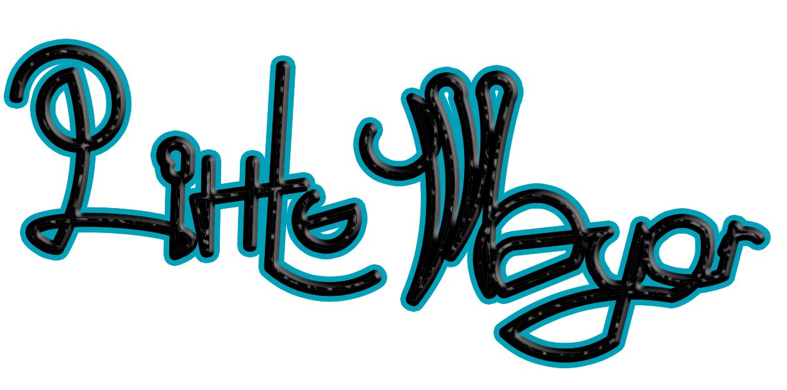
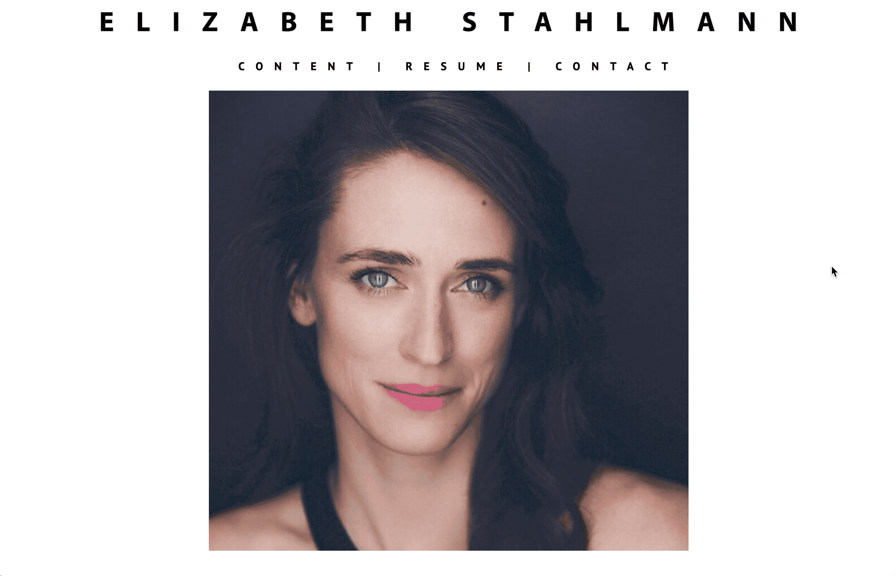
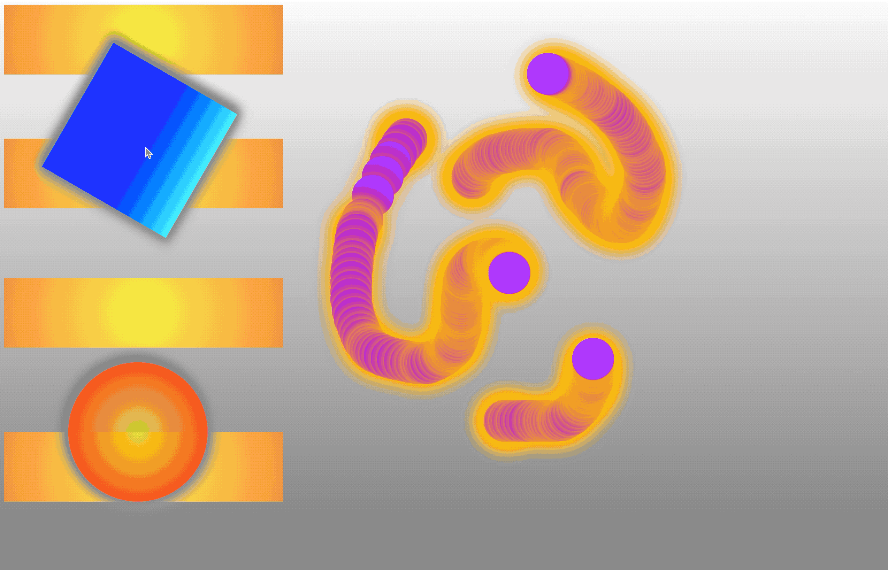
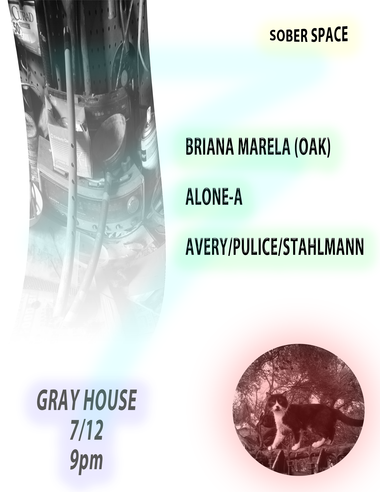

×

This website was designed for Mills College Signal Flow festival in 2019. Illustrations by Jake Parker-Scott, font by Matt Robidoux, web design and development by Mitch Stahlmann

×

Litle Mayor is a variety show at worst and a musical act somewhere in between.

×

This webpage was originally designed in 2017.

×

*** is a sound reactive space designed using P5JS and the native Web Audio API library. The sounds are inspired by compositions of David Behrman and John Bischoff. Developed in the spring of 2020.
